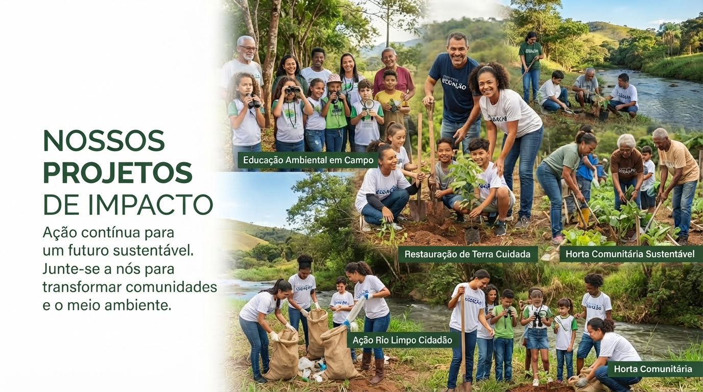

Educação Digital
Oficinas de informática básica e robótica para jovens de periferia, aproximando-os do mundo da tecnologia.

Conheça as iniciativas que colocamos em prática nas comunidades que apoiamos.
Oficinas de informática básica e robótica para jovens de periferia, aproximando-os do mundo da tecnologia.
Implantação de hortas comunitárias e educação ambiental nas escolas parceiras.
Distribuição de livros e criação de espaços de leitura em bairros com pouco acesso a bibliotecas.